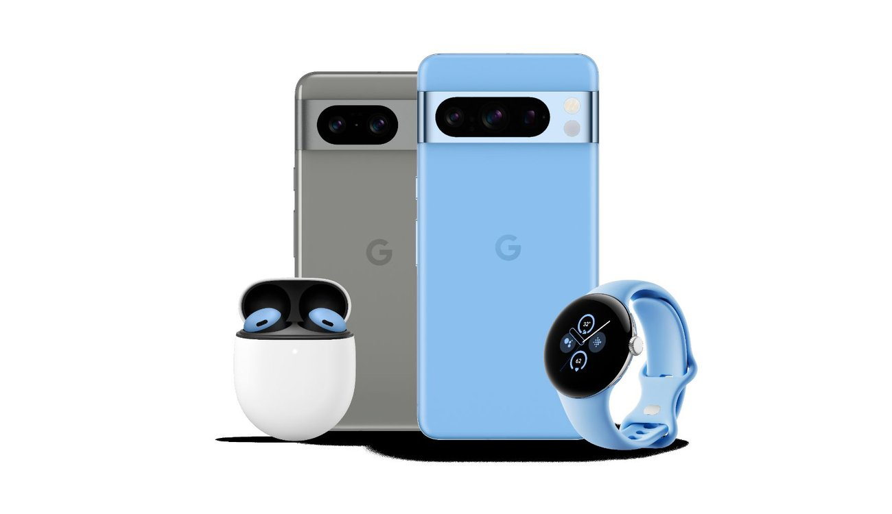
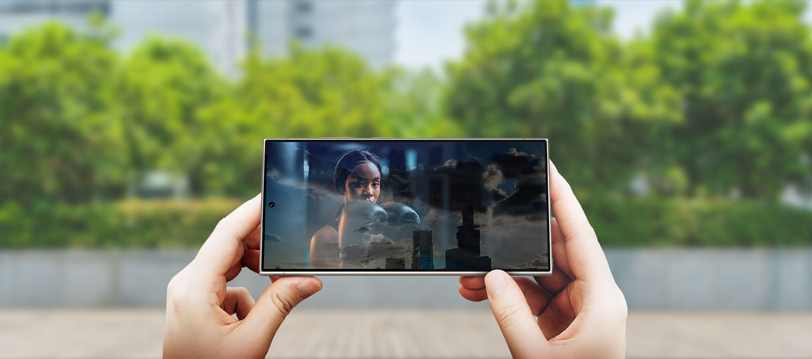

Google Pixel 8 Series - Qualidade e preço bom?
Postado 09 de junho 2024 Experimente o Google Pixel 8: desempenho incrível com o novo chip Tensor G4, câmeras excepcionais, design elegante e bateria duradoura. Transforme sua experiência móvel com inovação e qualidade incomparáveis
Leia maisQuais as maiores qualidades do Samsung S24?
Postado 09 de junho 2024 O Samsung S24 impressiona com sua tela de alta resolução, oferecendo uma experiência visual imersiva. Sua velocidade de processamento ágil e eficiente torna a navegação fluida e responsiva. Além disso, sua câmera captura fotos nítidas e vibrantes em diversas condições de iluminação. Com um design elegante e compacto, é fácil de transportar e manusear. Sua bateria de longa duração garante horas de uso sem preocupações.
Leia maisPostagens recentes
Dead by Daylight é um eletrizante jogo multiplayer assimétrico. Os jogadores assumem papéis de sobreviventes ou assassinos em uma atmosfera de horror. Enquanto os sobreviventes tentam escapar, os assassinos caçam e sacrificam. Estratégia, habilidade e nervos de aço são essenciais para a vitória em meio à tensão constante.
Leia maisSayonara Wild Hearts é uma jornada visualmente deslumbrante e musicalmente hipnotizante. Neste jogo de ação e ritmo, os jogadores assumem o papel de uma jovem coração partido que se aventura por um mundo de sonhos, enfrentando desafios emocionais enquanto corre contra o tempo para restaurar o equilíbrio cósmico.
Leia mais